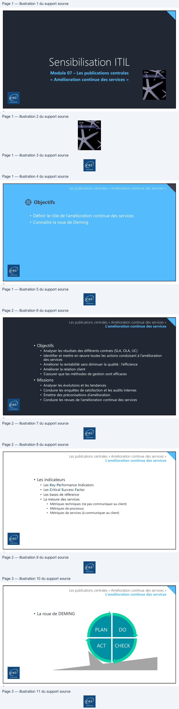

Transcription du document du Drive TSSR. La mise en forme est adaptée au Web ; les compléments IA du portail sont présentés séparément.
Module 07 – Les publications centrales
« Amélioration continue des services »
1
Les publications centrales « Amélioration continue des services »
Objectifs
• Définir le rôle de l’amélioration continue des services
• Connaitre la roue de Deming
2
Les publications centrales « Amélioration continue des services »
L’amélioration continue des services
• Objectifs
• Analyser les résultats des différents contrats (SLA, OLA, UC)
• Identifier et mettre en œuvre toutes les actions conduisant à l’amélioration
des services
• Améliorer la rentabilité sans diminuer la qualité : l’efficience
• Améliorer la relation client
• S’assurer que les méthodes de gestion sont efficaces
• Missions
• Analyser les évolutions et les tendances
• Conduire les enquêtes de satisfaction et les audits internes
• Émettre des préconisations d’amélioration
• Conduire les revues de l’amélioration continue des services
3
Les publications centrales « Amélioration continue des services »
L’amélioration continue des services
• Les indicateurs
• Les Key Performance Indicators
• Les Critical Success Factor
• Les bases de référence
• La mesure des services
• Métriques techniques (ne pas communiquer au client)
• Métriques de processus
• Métriques de services (à communiquer au client)
4
N
Les publications centrales « Amélioration continue des services »
L’amélioration continue des services
• La roue de DEMING
PLAN
DO
CHECK
ACT
5
| 2
